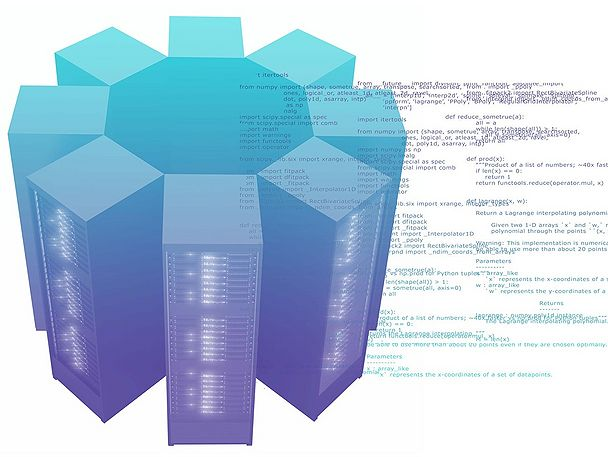

Welcome to the ACENET Technical Wiki. On this site, you will find technical and operations information related to ACENET's computing resources, as well as user support material.
To find information regarding ACENET, our services, and what's happening in news, events and training, please visit our main website at www.ace-net.ca.

| ACENET is a partner consortium of the Digital Research Alliance of Canada, the organization responsible for digital research infrastructure and advanced research computing in Canada. |